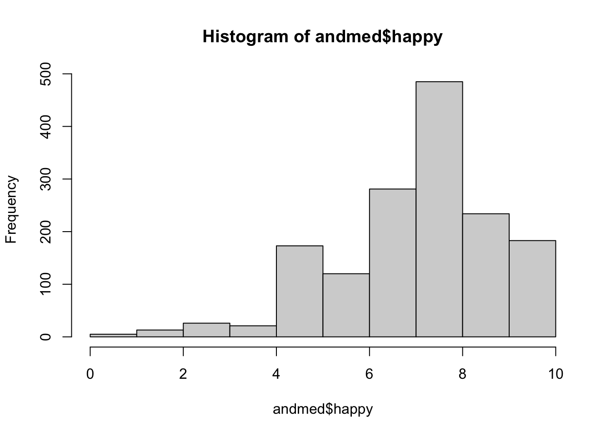
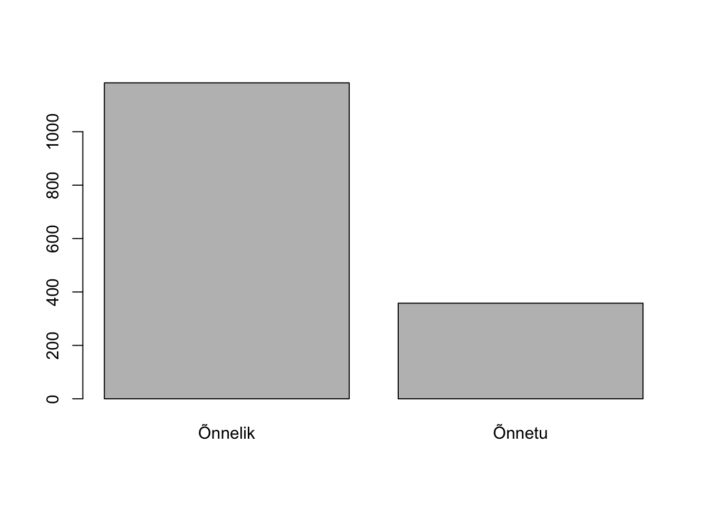

library(tidyverse)
library(kableExtra)13 Regressioon - logistiline
Kasutan Euroopa Sotsiaaluuringu (edaspidi ESS) andmeid, mis on kogutud Eesti inimeste kohta uuringu 10. voorus. Andmed on võimalik alla laadida ESS andmete portaalist. Siin peatükis olen teinud 10. voorust väljavõtte paari tunnuse kohta.
andmed<-read_csv("ESS_10_valik.csv")Code
#muudan korraga character tüüpi tunnused faktoriteks
andmed<-andmed%>%
mutate(across(where(is.character), as.factor))13.1 Binaarne logistiline regressioon
Prognoositav tunnus peab olema binaarne ehk kahe kategooriaga.
Tunnuste ettevalmistus mudeli jaoks
Kui vaatame histogrammi, siis meil on Eestis inimesed pigem ikka õnnelikud.
hist(andmed$happy)
Võtame arvesse, et õnnelike inimesi on rohkem ja teeme vastajatest kaks gruppi nii, et need kes hindasid oma õnne väärtuseks 0 kuni 6 on edaspidi “õnnetu” ja ülejäänud “õnnelik” grupis. Vaata vajadusel peatükki tunnuste muutmisest. Tunnus peab olema oma tüübilt factor. Ühtlasi kodeerime ka mõned teised tunnused ringi, et oleks väiksem kategoooriate arv mudelis.
Code
andmed<-andmed%>%
mutate(onn=if_else(happy<7, "Õnnetu", "Õnnelik"))%>%
mutate(onn=as_factor(onn))Code
andmed$sobrad<-fct_collapse(andmed$inprdsc,
"Vähe" = c("Mitte ühtegi","1"),
"Mõned"= c("2", "3"),
"Palju"= c("4-6" ,"7-9", "10 või enam"))
andmed$sobrad<-fct_relevel(andmed$sobrad, c("Vähe", "Mõned", "Palju"))
andmed$sissetulek<-fct_collapse(andmed$hincfel,
"Raske on" = c("Praeguse sissetuleku juures on väga raske hakkama saada", "Praeguse sissetuleku juures on raske hakkama saada"),
"Elame hästi" =c("Elame mugavalt praeguse sissetuleku juures",
"Saame hakkama praeguse sissetuleku juures"))plot(andmed$onn)
summary(andmed$onn)Õnnelik Õnnetu NA's
1183 358 1 Mudeli koostamine
Käsuga contrasts() näeb ära, milline tunnuse on taustakategooria. Taustakategooria on märgitud nulliga (0) ning prognoosima hakatakse gruppi 1. Kui tahad järjestust vahetada, siis kasuta käsku relevel().
contrasts(andmed$onn) Õnnetu
Õnnelik 0
Õnnetu 1Prognoosime, kas inimese vanus, sissetulek ja sõprade olemasolu võiks mõjutada “õnnetu” grupis olemist.
Logistiline regressioon käib käsuga glm(). Salvestame mudel eraldi objekti.
mudel1<-glm(onn ~ agea + sissetulek + sobrad,
family = binomial(link="logit"),
andmed)Kui ei ole soov mõnda muud paketti alla laadida, näeb mudeli väljatrükki käsuga summary().
summary(mudel1)
Call:
glm(formula = onn ~ agea + sissetulek + sobrad, family = binomial(link = "logit"),
data = andmed)
Coefficients:
Estimate Std. Error z value Pr(>|z|)
(Intercept) -2.427512 0.254024 -9.556 < 2e-16 ***
agea 0.024874 0.003689 6.743 1.55e-11 ***
sissetulekRaske on 1.162738 0.153790 7.561 4.01e-14 ***
sobradMõned -0.448037 0.146431 -3.060 0.00222 **
sobradPalju -0.598732 0.195036 -3.070 0.00214 **
---
Signif. codes: 0 '***' 0.001 '**' 0.01 '*' 0.05 '.' 0.1 ' ' 1
(Dispersion parameter for binomial family taken to be 1)
Null deviance: 1667.2 on 1538 degrees of freedom
Residual deviance: 1512.0 on 1534 degrees of freedom
(3 observations deleted due to missingness)
AIC: 1522
Number of Fisher Scoring iterations: 4Riskisuhteid näeb käsuga exp() ja coef() ühendamisel. Tulemuste tõlgendamise meeldib mulle riskisuhteid rohkem vaadata. Lisan neile kohe ka käsu round() otsa, et oleks silmale parem vaadata.
round(exp(coef(mudel1)),2) (Intercept) agea sissetulekRaske on sobradMõned
0.09 1.03 3.20 0.64
sobradPalju
0.55 \(Exp\) puhul on kordajate võrldusastmeks 1 ehk 100%.
13.2 Tulemuste tõlgendamine
Esmalt peab vaatama, kas kordaja on negatiivne või positiivne. Vanuse ja sisstuleku kordaja on positiivne. See tähendab, et vanuse kasvades suureneb risk olla õnnetu. Riski õnnetu olla suurendab ka see, kui sul on oma sisstulekute juures raske toime tulla. Negatiivne kordaja aga vähendab riski.
Kui suur see riski on? Selleks on hea vaadata riskisuhteid \(exp\) tasemel. Inimestel, kellel on oma sissetulekute juures raske toime tulla, on 3,2 korda suurem risk sattuda gruppi “õnnetu”.
Teeme veel ühe mudeli ja võrdleme neid pärast koos
mudel2<-glm(onn ~ agea + sobrad,
family = binomial(link="logit"),
andmed)13.3 Väljatrükk paketiga huxtable
Paketi huxtable abil on kerge korraga mitme mudeli väljatrükke teha. Regressioonimudeli puhul on sobilik käsk huxreg(). Ignoreeri hoiatust, et r.squared ei leitud kuna see väärtus tuleb lineaarse mudeli puhul.
library(huxtable)huxreg(mudel1, mudel2)Warning in huxreg(mudel1, mudel2): Unrecognized statistics: r.squared
Try setting `statistics` explicitly in the call to `huxreg()`| (1) | (2) | |
|---|---|---|
| (Intercept) | -2.428 *** | -2.302 *** |
| (0.254) | (0.248) | |
| agea | 0.025 *** | 0.028 *** |
| (0.004) | (0.004) | |
| sissetulekRaske on | 1.163 *** | |
| (0.154) | ||
| sobradMõned | -0.448 ** | -0.527 *** |
| (0.146) | (0.143) | |
| sobradPalju | -0.599 ** | -0.664 *** |
| (0.195) | (0.191) | |
| N | 1539 | 1539 |
| logLik | -755.991 | -783.719 |
| AIC | 1521.982 | 1575.438 |
| *** p < 0.001; ** p < 0.01; * p < 0.05. | ||
Tulemuste esitlemine paketiga broom
Pakett broom (Robinson, Hayes, and Couch 2024) annab käsu tidy(). Kasutame seda, et saada mudelist kätte nn “põhiosa”.
library(broom)puhas_mudel<-tidy(mudel1)
puhas_mudel$exp_coef<-exp(puhas_mudel$estimate)puhas_mudel| term | estimate | std.error | statistic | p.value | exp_coef |
|---|---|---|---|---|---|
| (Intercept) | -2.43 | 0.254 | -9.56 | 1.22e-21 | 0.0883 |
| agea | 0.0249 | 0.00369 | 6.74 | 1.55e-11 | 1.03 |
| sissetulekRaske on | 1.16 | 0.154 | 7.56 | 4.01e-14 | 3.2 |
| sobradMõned | -0.448 | 0.146 | -3.06 | 0.00222 | 0.639 |
| sobradPalju | -0.599 | 0.195 | -3.07 | 0.00214 | 0.55 |
13.4 Mudeli seletusvõime hindamine
Mina olen harjunud kasutama paketist rcompanion (Mangiafico 2024) käsku nagelkerke().
library(rcompanion)Lihtsaim viis on kasutada käsku kogu mudelil, millega saab põhjaliku väljarüki.
nagelkerke(mudel1)$Models
Model: "glm, onn ~ agea + sissetulek + sobrad, binomial(link = \"logit\"), andmed"
Null: "glm, onn ~ 1, binomial(link = \"logit\"), andmed"
$Pseudo.R.squared.for.model.vs.null
Pseudo.R.squared
McFadden 0.0949634
Cox and Snell (ML) 0.0979503
Nagelkerke (Cragg and Uhler) 0.1478990
$Likelihood.ratio.test
Df.diff LogLik.diff Chisq p.value
-4 -79.324 158.65 2.8491e-33
$Number.of.observations
Model: 1539
Null: 1541
$Messages
[1] "Note: For models fit with REML, these statistics are based on refitting with ML"
$Warnings
[1] "WARNING: Fitted and null models have different numbers of observations"Ruumi kokkuhoidvam viis on salvestada see eraldi väärtusena (kolmas kordaja ehk Nagelkerke Cragg and Uhler väärtus). Ümardan ka selle kohe kaks kohta pärast koma käsuga round().
nagelkerke_kordaja <- round(nagelkerke(mudel1)$Pseudo.R.squared.for.model[3],2)Korrutan kordaja läbi 100-ga, et saada kätte protsendid.
nagelkerke_kordaja*100[1] 15Mudeli selgitusvõime on 15 %.